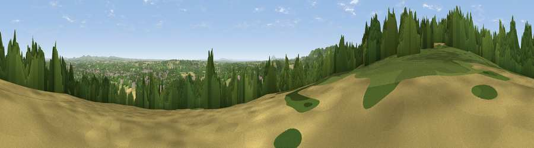

Viewpoint near Dunley
#14949 in England · top 27% of its area beats it · near DunleyThe view, rendered

A 360° render of this exact spot computed from the terrain model, tree cover and land cover — summer colours, afternoon light, calibrated against photographs of famous viewpoints. Real trees, hedges and buildings will differ in detail.
The panorama
Grey silhouette: terrain skyline in each direction (720 bearings, Earth curvature and refraction included). Dashed green: skyline with trees (+15 m) and buildings (+8 m) as obstacles. Blue strip: how far the ground is visible on each bearing.
Where the view opens
Wedge length = distance to the farthest visible ground on that bearing (vegetation-aware). Rings at 10, 25 and 50 km.
What fills the view
38% woodland · 28% cropland · 26% grassland · 8% built-up
Angular shares of the visible panorama (visual magnitude), not map area. Landscape diversity 0.56 (0–1 Shannon).
Key numbers
More beautiful places nearby
The staircase of upgrades: each row has a higher view potential than everything closer. Driving times are estimates from straight-line distance, calibrated against real road routing — check an actual route before setting out.
| Place | Direction | Drive | Score |
|---|---|---|---|
| Stagborough Hill | N · 2 km | ~4 min | 63.8 |
| Viewpoint near Abberley | SW · 4 km | ~10 min | 77.5 |
| Viewpoint near Abberley | SW · 5 km | ~11 min | 78.1 |
| Abberley Hill | SW · 5 km | ~11 min | 80.4 |
| Viewpoint near Great Witley | SSW · 7 km | ~15 min | 83.4 |
| Titterstone Clee | WNW · 21 km | ~35 min | 83.8 |
| North Hill | S · 24 km | ~40 min | 86.8 |
| Worcestershire Beacon | S · 25 km | ~41 min | 87.1 |
52.33329, -2.31364 · source: screening · position refined by local search. Computed location — check access rights before visiting.